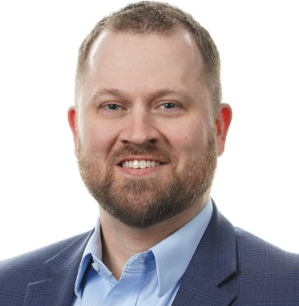

R&D Executive · Keller, TX
Medical Device Development | Leadership | Innovation
Driving Innovation. Building Leaders.

I lead R&D organizations that build implantable and surgical medical devices, from early concept through verification, validation, and commercial launch. My background is mechanical engineering (BS and MS from the University of Oklahoma, plus an MBA from Indiana University's Kelley School of Business), and I still think like an engineer even though most of my time now goes to building and running teams.
Most of my career has been at Alcon, where I helped grow a product design organization from five people to more than twenty five, and contributed to the global launches of the Clareon IOL family in the AutonoMe delivery system and Systane iLux2. I'm now Director of R&D at Osteal Therapeutics, a post-clinical medical device company developing combination therapies for periprosthetic joint infection, where I built the R&D team from five people to fifteen and put a Core Team operating model in place to keep governance from lagging behind a fast-growing organization.
I'm particularly interested in the transition from individual contributor to technical leader to organizational leader, and in how R&D leaders create leverage rather than simply taking on more of the work themselves.
Grew R&D and product design organizations from 5 to 25+ at Alcon and 5 to 15+ at Osteal Therapeutics.
Granted US and global patents across a device engineering career, plus recurring ideation programs to capture new IP at Osteal.
Clareon Aspheric, Toric, and Vivity IOLs in the AutonoMe delivery system, and Systane iLux2 for dry eye.
An R&D rotational program at Alcon and a Core Team operating model at Osteal, both for stronger governance and talent development.